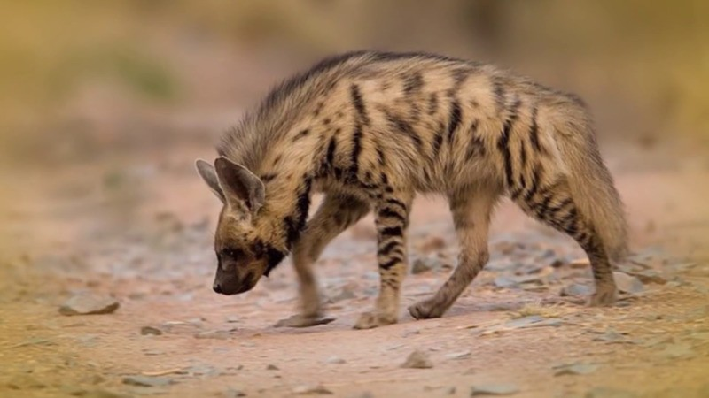
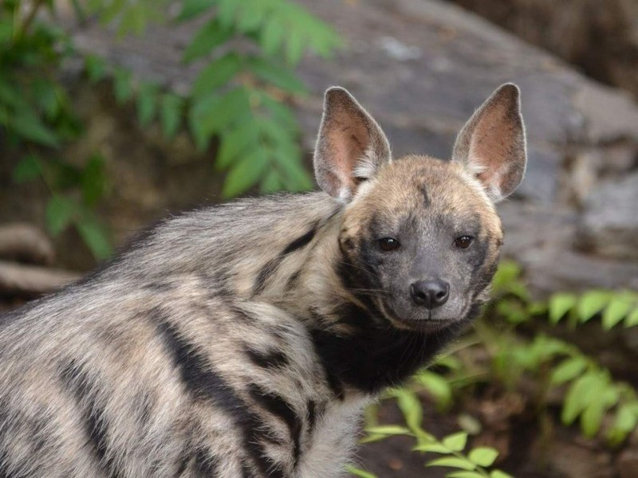

Хищная полосатая гиена обитает в степной, относительно горной местности. Животное отличается разнообразным питанием и одиночным образом жизни. Полосатая гиена охотится ночью, реже бывает на открытой местности днем. Животное внесено в обновленную версию Красной книги России.
Хищная полосатая гиена обитает в степной, относительно горной местности. Животное отличается разнообразным питанием и одиночным образом жизни. Полосатая гиена охотится ночью, реже бывает на открытой местности днем. Животное внесено в обновленную версию Красной книги России.
Полосатая гиена обитает в предгорьях, недалеко от рек и водоемов. В редких случаях занимает овраги, склоны. Пещеры подходят для зимовки в холодных регионах. Невысокие возвышенности с преимущественно сухой почвой – лучшее место для производства потомства.
В высоких горах пятнистый вид не встретить. Песчаные пустыни больше подходят для охоты хищника. Важным условием остается наличие водоема неподалеку – не мене, чем в 10 км от место обитания.
Полосатый вид можно встретить в населенных районах, где хищник прячется в высоких зарослях, кустарниках. В регионах со сменой сезонов и холодными зимами гиена не водится. Животное с трудом переносит высокую влажность.
Взрослые особи не собираются в стаи, ведут одиночный образ жизни. Охота проходит в одиночку. Основной пищей является падаль, остатки от добычи других хищников.
Важная часть рациона – растения. Гиены употребляют дыни, арбузы, орехи и семена. После плотной пищи животные впадают в непродолжительную спячку.